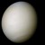
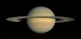

太阳系中行星的一些数据。 (资料取自
NASA 行星数据 - 公制
，图片取自NASA 照片库。）
|
名字 |
图片 |
质量（1024kg) |
直径（km） |
密度（km/m3) |
重力（m/s2) |
天长（小时） |
与太阳距离（106km) |
平均温度（℃) |
卫星数据 |
备注 |
| 类地行星 |
水星 |
 |
0.330 |
4,879 |
5427 |
3.7 |
4222.6 |
57.9 |
167 |
0 |
距太阳最近 |
| 金星 |
 |
4.87 |
12,104 |
5243 |
8.9 |
2802.0 |
108.2 |
464 |
0 |
|
| 地球 |
|
5.97 |
12,756 |
5514 |
9.8 |
24.0 |
149.6 |
15 |
1 |
我们的世界 |
| 火星 |
 |
0.642 |
6,792 |
3933 |
3.7 |
24.7 |
227.9 |
65 |
2 |
红色星球 |
| 类木行星 |
气巨星 |
木星 |
 |
1898 |
142,984 |
1326 |
23.1 |
9.9 |
778.6 |
-110 |
67 |
太阳系最大 |
| 土星 |
 |
568 |
120,536 |
687 |
9.0 |
10.7 |
1433.5 |
-140 |
62 |
|
| 冰巨星 |
天王星 |
 |
86.8 |
51,118 |
1271 |
8.7 |
17.2 |
2872.5 |
-195 |
27 |
|
| 海王星 |
 |
102 |
49,528 |
1638 |
11.0 |
16.1 |
4495.1 |
-200 |
14 |
|
| 矮行星 |
冥王星 |
 |
0.0146 |
2,370 |
2095 |
0.7 |
153.3 |
5906.4 |
-225 |
5 |
2006年降格，但尚存争议。 |